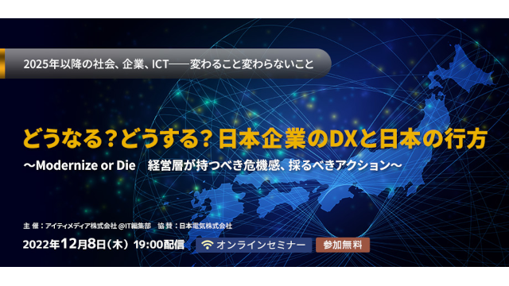

Exastro イベント一覧
-
Webセミナー2022/12/8開催
- IT Automation
- Operation Autonomy Support Engine
- EPOCH
【参加募集中】
どうなる？どうする？日本企業のDXと日本の行方Modernize or Die 経営層が持つべき危機感、とるべきアクションデジタルありきの時代、「刃こぼれせずに攻め続ける」ために必要なものとは何か
デジタルを前提に在り方を見直すか、過去の成功体験にしがみつくか――
ビジネスとテクノロジーの来し方行く末をにらみつつ、変わるもの、変わらないもの、可逆的なもの、不可逆的なものを5人の有識者が徹底討論します。- 主催：アイティメディア株式会社
- 参加費：無料
- 参加申込：必要
- 定員：300名
- 申込締切：2022/12/8（当日） 10:00
-
Webセミナー2020/11/18開催
- IT Automation
- Playbook Collection
- Operation Autonomy Support Engine
システムライフサイクルをデジタル化するExastro活用術攻めと守りの自動化でニューノーマルを勝ち抜く「自動化」によりこれまで人手でカバーしてきた潜在的なシステム構築・運用の課題をどのように解決できるのかを解説します。NTTドコモ様、レッドハット様をお迎えしたトークセッションもご用意しており、本領域での取り組みについてディスカションいたします。- 主催：NEC
- 参加費：無料
- 参加申込：必要
- 定員：100名
- 申込締切：2020/11/18（当日） 10:00
-
Webセミナー2020/09/11開催
- IT Automation
- Playbook Collection
- Operation Autonomy Support Engine
システムライフサイクルをデジタル化するExastro活用術攻めと守りの自動化でニューノーマルを勝ち抜く「自動化」によりこれまで人手でカバーしてきた潜在的なシステム構築・運用の課題をどのように解決できるのかを解説します。NTTドコモ様、レッドハット様をお迎えしたトークセッションもご用意しており、本領域での取り組みについてディスカションいたします。- 主催：NEC
- 参加費：無料
- 参加申込：必要
- 定員：150名
- 申込締切：2020/09/10 17:00